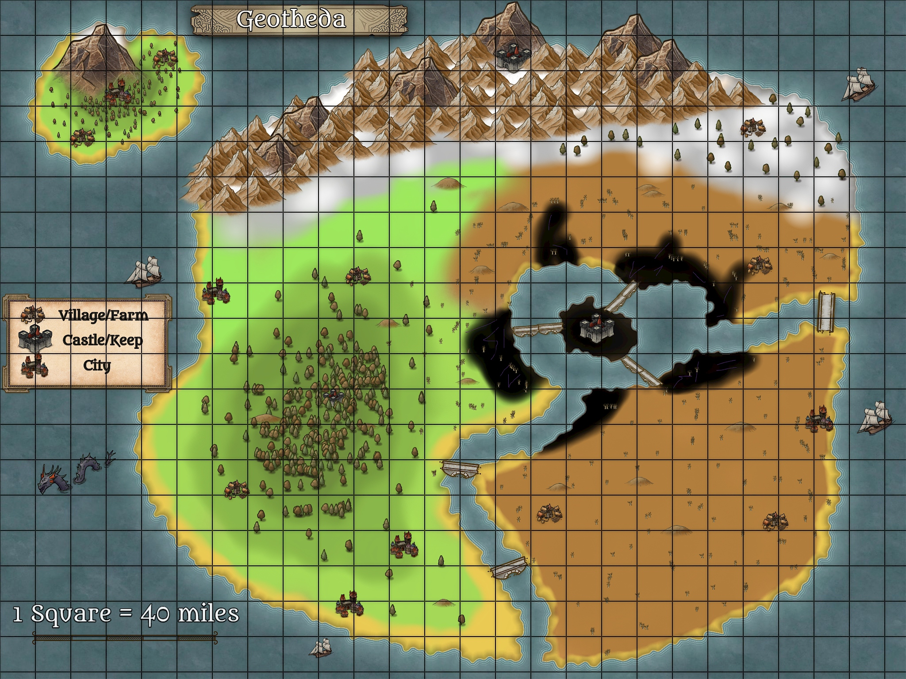
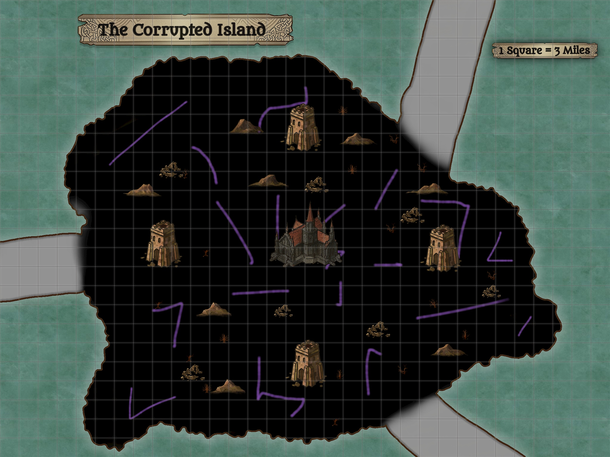

The Map of Geotheda and it's Enviornment
Once upon a time this was a vibrant and diverse world. But ever since the calamity
the world has changed. What once was a small desert spread throughout half the
continent as all life in nature was drained. Now it is home to a large desert to
the East, the plains and forest to the West, a tundra and mountain range to the
North, and an island to the North West.
The Map of the Corrupted Island
\ This is the source of the calamity. Now it is a floating island of dark crystal and corrupted earth. The corrupted land is now home to an increased amount of monsters as well as a dark castle standing ominously in the center of the island. Little does anyone know, but this is the source of the corruption. Underneath this castle stands a portal that leads to the Shadowfell, a world of shadow, which is slowly enveloing the world in shadows.
As I create more maps I will update the maps. This will probably be a regulary updated as I create more